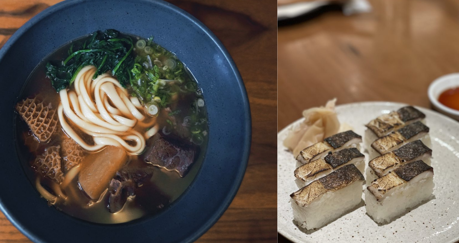

irasshaimase
Welcome to the wonderful world of Japanese cuisine. Must-try Japanese restaurants in the U.S.
by Laura Song | Oct 31, 2021

Raku
New York, NY
Raku is one of the few places I always return to whenever I visit New York City. It is an udon restaurant located in East Village, and regardless of the weather, I always find myself looking for excuses to slurp down their handmade noodles with tapered ends. The hearty bowl of soup served in a deep, textured stoneware warms the soul on cold winter days and cures hangovers after a wild night out in the summer. This cash-only, hole-in-the-wall establishment is easy to miss, but once you get the hang of recognizing their rustic noren (curtains at the entrance of Japanese restaurants), you will be greeted by delicious dishes including osizushi (pressed sushi) and chicken karaage. The most unxpected part of the dining experience that will keep you wanting more? The complimentary frozen grapes they serve you at the end of every meal.
SUSHI-SAN
Chicago, IL
Chicago is like the happy medium between the chaos of New York and the humdrum of Boston. It's filled with hip and moden restaurants like SUSHI-SAN where fusion is done right. Freshest raw fish is made into hand rolls or what they call San-Sets, which are like bento boxes. They're all made with a twist by using cross-cultural ingredients like gochujang (spicy red pepper paste) and modifying traditional recipies like using crispy rice as the base for nigiri. SUSHI-SAN offers a 14-course table-side omakase and sake pairings featuring seasonal ingredients from all over the world. If this is out of your budget, Express Lunch is an amazing alternative to try a little bit of everything from miso salmon rice bowl to tuna trio consisting of fatty tuna like otoro and chutoro. Also check out their sister restaurant RAMEN-SAN for a delicious bowl of noodles and cold draft beer.
Ittoku
Cambridge, MA
Relocated to Porter Square from Allston, Ittoku is an izakaya restaurant that reminds you that there is a lot more to Japanese cuisine than just sushi. As the literal translation of the word izakaya suggests (stay-drink-place), Ittoku resembles a Japanese pub with casual ambience that serves everything in between street food like yakitori (skewers) and rare delicacies like ankimo (monkfish liver). Some of my personal favorites include the scallion-mayo okonomiyaki and sashimi carpaccio. They also offer a wide range of hot sake and draft beer that pairs well with any dish. Ittoku is the perfect place for a date night and big gatherings.
Oishii
Boston, MA
If you're a sushi fanatic like myself, you've probably heard of O Ya and Douzo. At the end of road less traveled, there is Oishii, tucked in the most unassuming corner of South End. Dark gray, industrial interior decor may leave you guessing at first, but once you see the way each dish is presented, you will come to realize that the contrast was intentional. Whether it's literal fire or edible flowers, every dish is garnished with a wow factor. The best part is, it's not to compensate for anything — every bite is as heavenly as it looks. Salmon on Fire pictured above is one of the most popular appetizers, followed by A5 Wagyu Beef Tataki served on sizzling hot stone plate. Each aspect of the presentation is exquisite, yet functional and purposeful, accentuating the flavor and freshness of the ingredients. It's the ideal venue for special occasions.
Ootoya
New York, NY
Ever go to a Chinese restaurant and think to yourself, "Everything is amazing, but how am I supposed to eat all of this?" Ootoya is for foodies who strive for variety than quantity. Ootoya's specialty is traditional home cooked set-meals called teishoku that are balanced in nutrition and prepared with balanced the freshest ingredients. From grilled mackerel to katsu don, their dishes are served with miso soup, pickled vegetables, rice, and salad. You can customize it to add sides like silky steamed egg (chawanmushi) and fermented soy beans (natto) to create your own set. Everything is served on its own little dish neatly on a tray, making the exeperience more personal. You will be left nostalgic and homesick for their dishes.